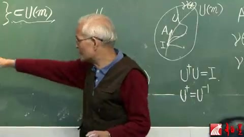
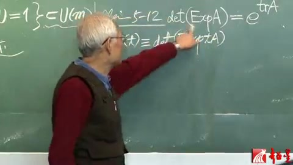
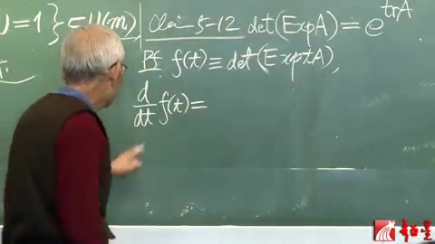
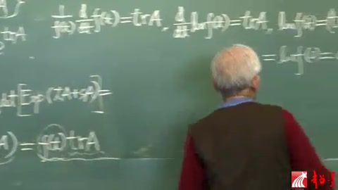
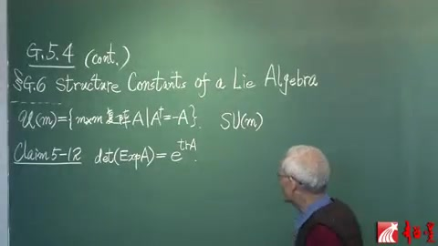
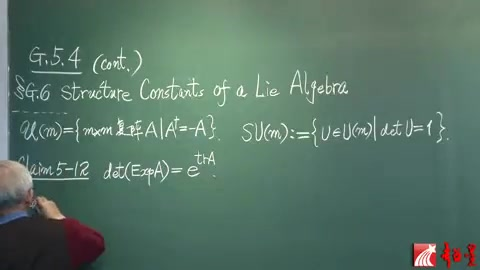
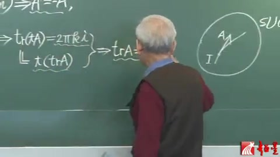
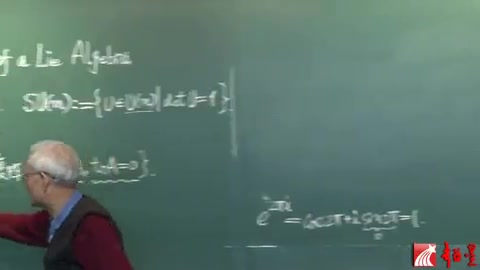
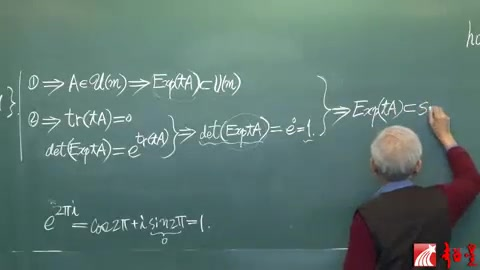

李群李代数 第29讲 酉群（续）¶
自动生成的课程注解文档（共 10 个段落，原始视频）
目录¶
- 00:00:00 段落 1
- 00:01:35 段落 2
- 00:06:43 段落 3
- 00:06:56 段落 4
- 00:11:57 段落 5
- 00:17:00 段落 6
- 00:17:53 段落 7
- 00:22:55 段落 8
- 00:26:36 段落 9
- 00:28:55 段落 10
段落 1¶
时间： 00:00:00 ~ 00:01:31
📝 原始字幕
下面我们要返回李丹树 为什么要返回李丹树呢 因为这还跟李群没讲完有关 这个李群我们讲到 UM李群 接着又出了一个花一瓦弹这个李丹树 这都讲完了 但是我们还应该有一个所谓特 就是有群了 我们还可以谈一个SUM加一个S 记得吗 这就是S就是special 就特殊有群了 这个特殊有群还没有讲 不过以前已经讲过了 龙统的说 主要你加一个S 所谓特殊呢 就是主要出他行列设为正义 那么所以这个特殊有群的定义 就是UM in这个有群 有群的元素 占一条 就他的Determinus呢 是要等有万正义啊 所以我们现在有翻译后来讲李群 讲什么呢 讲这个特殊有群了 那么现在我们要问有问题 就是 当这个特殊有群呢 它就是有群的一个李子群
课程截图：


注解¶
这段字幕的核心是引入特殊酉群 SU(m) 作为酉群 U(m) 的李子群，并强调其"特殊"之处在于行列式为 1 的约束条件。以下是对新内容的专业注解：
1. 核心概念与公式解析¶
当前段落引入的关键数学定义是特殊酉群（Special Unitary Group）：
SU(m) 群的定义式：
符号说明： - \(\mathrm{U}(m)\)：\(m\) 阶酉群（Unitary group），由满足 \(U^\dagger U = I\) 的 \(m \times m\) 复矩阵构成（\(U^\dagger\) 表示厄米共轭）。 - \(\det U\)：矩阵 \(U\) 的行列式（Determinant）。 - "正一"（正义）：即行列式等于 \(1\)（\(\det U = 1\)），这是"特殊"（Special）一词的数学含义。对于酉矩阵，行列式自动满足 \(|\det U| = 1\)，即 \(\det U = e^{i\theta}\)；而 SU(m) 进一步限制相位 \(\theta = 0\)（模 \(2\pi\)）。
李子群结构：
符号 \(<\) 表示 \(\mathrm{SU}(m)\) 是 \(\mathrm{U}(m)\) 的李子群（Lie subgroup）——它既是子群，又是 \(\mathrm{U}(m)\) 作为李群的正则子流形。
2. 板书内容描述与公式详解¶
根据截图，黑板左侧呈现了酉群元素的指数映射（Exponential Map）表示，这是连接李代数与李群的关键桥梁：
板书公式：
符号与物理含义： - \(\Phi\)：李代数 \(\mathfrak{u}(m)\) 的元素（厄米矩阵），此处取对角化形式；对角元 \(\varphi_k \in \mathbb{R}\) 为实数（对应"荷"或"相位"）。 - \(\mathrm{Exp}\)：矩阵指数映射，\(\mathrm{Exp}(A) = \sum_{n=0}^\infty \frac{A^n}{n!}\)。 - \(W\)：酉矩阵（\(W \in \mathrm{U}(m)\)），起对角化作用；表明任意群元 \(U\) 都酉相似于一个对角矩阵。 - \(i\Phi\)：李代数到李群的生成元，\(\mathrm{Exp}(i\Phi) = \mathrm{diag}(e^{i\varphi_1}, \dots, e^{i\varphi_m})\)。
SU(m) 在板书上的体现： 对于 \(\mathrm{SU}(m)\) 子群，上述公式需附加无迹条件（Traceless Condition）：
这是因为 \(\det(\mathrm{Exp}(i\Phi)) = e^{i\,\mathrm{Tr}(\Phi)}\)，要求行列式为 1 等价于要求生成元 \(\Phi\) 的迹为零。因此，\(\mathfrak{su}(m)\) 李代数由无迹厄米矩阵构成。
3. 理论背景补充¶
从 U(m) 到 SU(m) 的维数变化： - \(\mathrm{U}(m)\) 的实维数为 \(m^2\)（\(m^2\) 个独立实参数）。 - \(\mathrm{SU}(m)\) 增加了一个实约束条件 \(\det U = 1\)（或 \(\mathrm{Re}\det U = 1\) 且 \(\mathrm{Im}\det U = 0\) 中的一个独立约束），因此维数为 \(m^2 - 1\)。 - 例如：\(\mathrm{SU}(2)\) 维数为 3（同构于 \(\mathrm{Spin}(3) \cong S^3\)），\(\mathrm{SU}(3)\) 维数为 8。
拓扑差异： - \(\mathrm{U}(m) \cong \mathrm{SU}(m) \times \mathrm{U}(1)\)（拓扑乘积，非直积）。 - \(\mathrm{U}(m)\) 的基本群 \(\pi_1(\mathrm{U}(m)) = \mathbb{Z}\)（有涡旋/绕数），而 \(\mathrm{SU}(m)\) 是单连通的（\(\pi_1(\mathrm{SU}(m)) = 0\)）。
4. 通俗理解¶
"特殊"的几何意义： - 把 \(\mathrm{U}(m)\) 想象成 \(m\) 维复空间中的"广义旋转"（保持向量长度不变）。 - 这种旋转可以分解为两部分：特殊旋转（\(\mathrm{SU}(m)\)，保持定向和体积，无整体相位）和全局相位旋转（\(\mathrm{U}(1)\)，乘以 \(e^{i\theta}\)）。 - \(\det U = 1\) 意味着变换后体积元的定向和大小严格保持不变，且没有"整体拧转"（global twist）。在量子力学中，这对应于保持概率流守恒且消除全局相位自由度。
与之前内容的衔接： 课程此前已讲解 \(\mathrm{U}(m)\) 的李代数（"李丹树"）结构，现在通过增加"行列式为 1"这一约束，将李代数 \(\mathfrak{u}(m)\) 限制为其子代数 \(\mathfrak{su}(m)\)（无迹部分），从而得到相应的李子群 \(\mathrm{SU}(m)\)。这是从一般酉对称性到"特殊"酉对称性（如标准模型中的 \(\mathrm{SU}(3)_c\) 色对称性）的关键一步。
段落 2¶
时间： 00:01:35 ~ 00:06:43
📝 原始字幕
我们以前还有过 比如说SOM SOM 它也是欧尔VM的李子群对吧 那么但是呢 它和它呢 这大小是不一样的 这个不能让人等好 但是他们的代数怎么样 是一样的 那么现在呢 它跟它也不能让人等好啊 大小也是不一样的 那么是不是 代数呢 也像它一样 会一样呢 答案是 不对 那个代数 这个也不一样 这些是跟呢 刚才讲的那个有群的一些特性 有密切关系的 那么我先把答案呢 说出来 然后我们主见来证明 那个答案呢 就是这个 现在我们要说的就是 花SU了ofm 这就是 它就是它的那个李子群对不对 我们发现这个李子群 跟呢 这个李子群 是不一样的 不一样包含什么有问题 但是这个不能改成等好 不一样在哪呢 这个李子群 这这写着呢 是要求 远速为反额迷 这个 只让你反额迷就行了 但是这个李子群 它当于反额迷 它属于它们 含于它们 但是除了反额迷之外 还要求是无计的 计就是trace 就是计战的计 就一个计战的对角园之合 要求那个 对角园之合还为零 光这条的话 它不意味着无计 那么无计是另一条 就是如果 计反额迷 又无计 那么这种计战 就属于它了 是这样的 这是那个结论 那么 我们刚讲到 claim 11 那个 这个结论是claim 13 那么中间有个claim 12 这个是打基础的 我们来讲一讲 这个claim 为了降后面那个 就是花SUM是无计额 无计反额迷之战 那么我们得先降一个预备的定理 我们就叫claim 5 claim 5 今天举了台湾他 那么真正刚才说 那个是claim 那个就是下离拜见 这个 这个我们说 这样 随便给一个计战 你总可以求他的大ESP 这个早就讲过了 这个还是个计战 你可以求他的 特朗普的行列室 也就是说一个计战 先求指数 再求 行列室 我们很感兴趣 是否会等于 先求行列室 再求指数 那么 the answer is no 没有这么便宜 那么改改就好了 改成什么呢 这个还是a 但是呢 这个不是d1t 而是t2 t2什么 trace trace就是g 这个代表 g 战a的g 这样就对了 那么这个通常不那么写了 因为g就有一个数 就写e 然后上边trace a 那么这个就有一个存进数学订例 跟离存你可以说没有关系 就有一个计战的订例 就这样的 那我们来证明一下 我定义一个小t的韩数叫f of t 它代表呢 the determinant of e x p q q q a
课程截图：



注解¶
这段字幕的核心是揭示特殊酉群 SU(m) 的李代数结构与酉群 U(m) 的区别，并引入连接行列式与迹的关键矩阵恒等式。以下是对新内容的专业注解：
1. 核心公式解析¶
本段引入了一个贯穿李群理论的重要矩阵恒等式（字幕中称为 Claim 5）：
或等价写作：
符号说明： - \(\det\)：行列式（Determinant），表示矩阵对体积的缩放因子 - \(e^{\mathbf{A}}\) 或 \(\operatorname{Exp}\mathbf{A}\)：矩阵指数（Matrix Exponential），定义为 \(e^{\mathbf{A}} = \sum_{k=0}^{\infty} \frac{\mathbf{A}^k}{k!}\)，是李代数到李群的指数映射 - \(\operatorname{tr}\mathbf{A}\)（或记作 \(\operatorname{trace}\mathbf{A}\)）：矩阵的迹（Trace），即对角元素之和 \(\sum_{i} A_{ii}\)，也是特征值之和 - \(\mathbf{A}\)：任意 \(m \times m\) 复方阵（在本课程语境下，特指李代数 \(\mathfrak{u}(m)\) 或 \(\mathfrak{su}(m)\) 中的元素）
重要推论： - 若 \(\mathbf{U} = e^{\mathbf{A}} \in \mathrm{SU}(m)\)，则 \(\det\mathbf{U} = 1\) - 由上述公式得 \(e^{\operatorname{tr}\mathbf{A}} = 1\)，故 \(\operatorname{tr}\mathbf{A} = 0\)（无迹） - 这解释了为什么 \(\mathfrak{su}(m)\) 要求无迹反厄米矩阵
2. 理论背景补充¶
李代数的约束条件： - \(\mathfrak{u}(m)\)（酉群的李代数）：仅需满足反厄米条件 \(\mathbf{A}^\dagger = -\mathbf{A}\)（保证 \(e^{\mathbf{A}}\) 是酉矩阵） - \(\mathfrak{su}(m)\)（特殊酉群的李代数）：需同时满足： 1. 反厄米：\(\mathbf{A}^\dagger = -\mathbf{A}\)（保证酉性） 2. 无迹：\(\operatorname{tr}\mathbf{A} = 0\)（保证行列式为 1，即"特殊"性）
这与正交群情形形成对比： - \(\mathrm{SO}(m)\) 和 \(\mathrm{O}(m)\) 的李代数相同（都是反称矩阵），因为 \(\det = \pm 1\) 在代数层面是离散的 - 但 \(\mathrm{SU}(m)\) 和 \(\mathrm{U}(m)\) 的李代数不同，因为 \(\det = 1\) 是一个连续的约束条件，在代数层面表现为迹为零
3. 通俗概念解释¶
"迹"与"行列式"的桥梁： 想象矩阵 \(\mathbf{A}\) 描述了一个"无穷小变换"（李代数元素），而 \(e^{\mathbf{A}}\) 是有限变换（李群元素）。 - 迹 \(\operatorname{tr}\mathbf{A}\)：描述变换的"膨胀率"（各方向伸缩量的总和） - 行列式 \(\det(e^{\mathbf{A}})\)：描述变换后体积的总体缩放比例
该公式表明：体积的总体缩放比例等于膨胀率的指数。这类似于复利计算：如果每个维度以一定速率增长（迹），总体积增长就是该速率的指数。
为什么 SU(m) 要"无迹"： 因为 SU(m) 要求"保体积"（行列式为 1），所以其无穷小生成元必须"不引起体积变化"（迹为零）。这就像要求一个流体流动既保持体积不变（不可压缩），其速度场的散度（对应迹）必须为零。
4. 板书内容描述¶
根据提供的截图，黑板内容呈现以下关键信息：
第一张截图： - 标题："梁灿彬 李群和李代数（二十九）" - 可见符号：\(\mathrm{U}(n)\)，\(A^\dagger = (iW)^\dagger\)，\(\gamma(t) \equiv \operatorname{Exp}\)，\(\gamma(0) = I\) - 图示：用曲线表示单参数子群从单位元 \(I\) 出发的指数映射
第二张截图： - 关键包含关系：\(\mathrm{SU}(m) \subset \mathrm{U}(m)\)（特殊酉群是酉群的子群） - 酉群定义：\(U^\dagger U = I\) 和 \(U^\dagger = U^{-1}\)（幺正性条件）
第三张截图（核心公式）： - 清晰书写：\(\det(\operatorname{Exp}\mathbf{A}) = e^{\operatorname{tr}\mathbf{A}}\) - 左侧：矩阵 \(\mathbf{A}\) 先取指数映射，再取行列式 - 右侧：先取矩阵的迹，再作普通指数函数 - 此公式是证明 \(\mathfrak{su}(m)\) 无迹性的关键工具
总结：本段通过引入行列式-迹恒等式，严格证明了 \(\mathrm{SU}(m)\) 的李代数不仅是反厄米的，还必须满足无迹条件，从而与 \(\mathrm{U}(m)\) 的李代数区分开来。这是理解"特殊"（Special）一词在李群语境中数学含义的关键节点。
段落 3¶
时间： 00:06:43 ~ 00:06:52
📝 原始字幕
把这里边a q q q q q 那就是t的韩数了 然后我拿这个韩数来求达
课程截图：

注解¶
这段字幕虽然语音识别存在偏差（"韩数"应为"函数"，"求达"应为"求导"），但结合板书截图和上下文，其核心是引入单参数子群技巧来证明行列式-迹恒等式。以下是针对这段新内容的专业注解：
1. 核心公式解析¶
本段引入的关键构造是含参矩阵的函数：
符号说明： - \(t\)：实值参数（标量），可视为"滑动变量"或"曲线参数" - \(t\mathbf{A}\)：矩阵 \(\mathbf{A}\) 乘以标量 \(t\)，表示在李代数 \(\mathfrak{u}(m)\) 或 \(\mathfrak{su}(m)\) 中沿 \(\mathbf{A}\) 方向的"伸缩" - \(\exp(t\mathbf{A})\)：矩阵指数，生成李群中的单参数子群（one-parameter subgroup），即过单位元的一条光滑曲线 - \(f(t)\)：从 \(\mathbb{R}\) 到 \(\mathbb{R}^+\) 的实值函数，将参数 \(t\) 映射为对应群元素的行列式
2. 理论背景与证明策略¶
这段内容开启了证明 \(\det(e^{\mathbf{A}}) = e^{\mathrm{tr}\mathbf{A}}\) 的标准分析路径：
核心思路： 通过引入参数 \(t\)，把抽象的矩阵等式转化为可微函数的微分方程问题。具体步骤为：
- 构造辅助函数：定义 \(f(t) = \det(e^{t\mathbf{A}})\)，显然 \(f(0) = \det(I) = 1\)
- 求导计算：对 \(f(t)\) 关于 \(t\) 求导，利用行列式求导公式 \(\frac{d}{dt}\det(B(t)) = \det(B(t))\cdot\mathrm{tr}(B(t)^{-1}B'(t))\)
- 建立微分方程：可得 \(f'(t) = f(t)\cdot\mathrm{tr}(\mathbf{A})\)，即 \(\frac{f'(t)}{f(t)} = \mathrm{tr}(\mathbf{A})\)
- 积分求解：解得 \(\ln f(t) = t\cdot\mathrm{tr}(\mathbf{A}) + C\)，由初值得 \(f(t) = e^{t\cdot\mathrm{tr}(\mathbf{A})}\)
- 取值得证：令 \(t=1\) 即得目标等式
与李代数的关系： 这一技巧也揭示了 \(\mathfrak{su}(m)\) 的定义条件：对于 \(\mathbf{A} \in \mathfrak{su}(m)\)，要求 \(\mathrm{tr}(\mathbf{A}) = 0\)，从而保证 \(f(t) \equiv 1\)，即单参数子群始终落在 \(\mathrm{SU}(m)\) 中（行列式恒为1）。
3. 通俗解释¶
想象你有一个可变形的水球（代表矩阵 \(\mathbf{A}\) 的作用），你想测量它的体积变化（行列式）。与其直接看最终状态，不如设置一个时间滑杆 \(t\)（从0到1），观察水球从原始状态（\(t=0\)，体积为1）逐渐变形的过程。
定义 \(f(t)\) 就是记录"在时间 \(t\) 时的体积"。通过对这个记录求导（看体积变化的瞬时速率），你会发现变化率与矩阵的"迹"（tr，代表体积膨胀/收缩的总趋势）成正比。积分回去，就得到了体积变化的指数规律。
4. 板书截图描述¶
截图显示讲师正用手指向黑板上的关键公式：
- 上方：已写出的恒等式 \(\det(\mathrm{Exp}\,\mathbf{A}) = e^{\mathrm{tr}\,\mathbf{A}}\)（标记为 Claim 5-12）
- 下方：新定义的函数 \(f(t) \equiv \det(\mathrm{Exp}\,t\mathbf{A})\)（或类似形式，表示将矩阵 \(\mathbf{A}\) 替换为 \(t\mathbf{A}\) 后的行列式函数）
讲师手势强调从矩阵到函数的过渡，暗示接下来将通过微分运算建立等式两边的联系。
段落 4¶
时间： 00:06:56 ~ 00:11:48
📝 原始字幕
这里啊 没写干什么 那就是干t 就是在对于每个tq都对的嘛 那么这个能等于什么呢 不难证明 如果你把那个f 那个 资源量变成t加另外一个变量叫s 还是关系还是f 然后我在 现在t也变了s也变 我呢是对s 球片岛 球完以后在s q 0 之后它就上于是t的韩数 这个呢 就等于这个 这个等号是对的 自己验教一下 不难验教 那么往下呢 就pane by pane s s等于0 这个呢 因为s of t是这样 所以这个就是 determinant s bonential t加s 那么就t a plus s a了 对吧 你愿意的话 你这么扩起来也行吧 扩不扩都一样的 这个呢 你自己也会走它一两步吧 这里面怎么样啊 你可以写成 x bonential of t a 再成 变成指数相成了吗 这个 我们这个就等什么呢 这是一个矩战 成上这个矩战 成完以后球航类似 就等于线 球航类似在相成 所以就等于呢 determinant x bonential t a 再去成了 determinant x bonential s a 那么现在这个东西 是什么 不就是f of t这个韩数吗 那么现在 我们这个这么做到的一下 有什么好说呢 就是把这两个变数 一个t一个s 分成两劫 是相成了 那么你这个矩对sq偏导数 这个是当常数的 你就不可以拿出去了吗 所以我们就可以提出前面那个 提出那个f of t到外面 上下就是penn bypenn s at s1 u0 然后是 determinant x bonential 这个s a 最后就得去球 这个轨东西了 管他叫轨东西就是 航类似 你觉得航类似是定义是很简单 但有运算起来 特别用抽象的公式的运算 不如具体给你一个巨战 航类似那个表达似是比较麻烦的 有些人还不知道怎么表达呢 那么表达似都没有 你还怎么去球偏导呢 那么所以我管他叫的轨东西 但这轨东西呢 你要是会于航类似是表达似呢 那么是可以球的 而且球出那结果特别简单 这么复杂的东西 做球出来就是trace of a 那个s就已经是没有了 s at u0取掉了 就trace of a 就这么简单 那么这个怎么障碍 这个我们书里是有的 那个我没时间讲 愿意的话自己看 你要是这个不影响对李晨的理解 那不行你就承认他也就可以 那么于是这就是f of t 再成一个trace a 这个是个常所 就跟t没关的 那么你看看这一头一围 是什么意思 如果你比较熟悉的话 你就马上看出来 我说你不踏着熟悉 我就把这个东西出过去
课程截图：



注解¶
这段字幕虽然语音识别存在较多偏差（如"球片岛"实为"求偏导"、"航类似"实为"行列式"、"轨东西"实为"鬼东西"等），但结合板书截图，其核心是展示利用单参数子群性质证明行列式-迹恒等式的精妙技巧。以下是针对这段新内容的专业注解：
1. 板书内容描述与公式解析¶
根据截图，板书中的关键推导链如下：
第一块板书（函数定义）：
第二块板书（双变量技巧）：
第三块板书（关键分解）：
最终微分方程（字幕中口述）：
符号说明： - \(s\)：辅助参数（虚拟变量），用于构造差分商求导 - \(\frac{\partial}{\partial s}\big|_{s=0}\)：在 \(s=0\) 处求偏导数，这是计算方向导数的标准技巧 - \(\operatorname{tr}(\mathbf{A})\)：矩阵 \(\mathbf{A}\) 的迹（trace），即对角元之和 \(\sum_i A_{ii}\)
2. 核心证明技巧：双变量法¶
这段内容展示了证明 \(\det(e^{\mathbf{A}}) = e^{\operatorname{tr}\mathbf{A}}\) 的标准解析方法，其核心思想是：
(1) 构造辅助函数¶
定义单参数曲线 \(f(t) = \det(e^{t\mathbf{A}})\)，目标转化为证明 \(f(1) = e^{\operatorname{tr}\mathbf{A}}\)。
(2) 指数映射的加性性质¶
利用矩阵指数的关键性质：
这是证明的代数基石，将加法 \((t+s)\) 转化为乘法 \(e^{t\mathbf{A}}e^{s\mathbf{A}}\)。
(3) 行列式的乘性¶
利用 \(\det(\mathbf{XY}) = \det(\mathbf{X})\det(\mathbf{Y})\)，得到：
这表明 \(f(t)\) 满足指数型函数方程。
(4) 导数计算技巧¶
通过引入辅助变量 \(s\)，将常微分方程转化为：
(5) 初始条件¶
计算 \(s=0\) 处的"鬼东西"（行列式在恒等元处的导数）：
这是证明中最微妙的分析步骤，涉及行列式作为矩阵函数在 \(\mathbf{I}\) 处的微分。
3. 理论背景：行列式的微分¶
字幕中提到的"鬼东西"（航类似/行列式的导数）实际上是Jacobi公式的特例：
直观理解： - 当 \(s \to 0\) 时，\(e^{s\mathbf{A}} \approx \mathbf{I} + s\mathbf{A}\)（一阶近似） - 行列式 \(\det(\mathbf{I} + s\mathbf{A})\) 展开为 \(1 + s\cdot\operatorname{tr}(\mathbf{A}) + O(s^2)\) - 因此导数恰好是 \(\operatorname{tr}(\mathbf{A})\)
为何是迹？ 从几何上看，行列式表示体积膨胀率，而迹表示无穷小生成元在各个坐标轴方向上的"拉伸率"之和。当 \(s\) 很小时，体积的相对变化率正是各方向拉伸率的累加——即迹。
4. 求解微分方程¶
得到方程后：
这是可分离变量的一阶ODE，解为：
由初始条件 \(f(0) = \det(\mathbf{I}) = 1\)，得 \(C=1\)。因此：
令 \(t=1\) 即得目标恒等式：
5. 方法论的深刻之处¶
这种证明方法的优美之处在于将代数问题转化为分析问题：
- 群论视角：\(t \mapsto e^{t\mathbf{A}}\) 是李群 \(GL(n,\mathbb{C})\) 的单参数子群
- 李代数连接：\(\operatorname{tr}(\mathbf{A})\) 正是李代数 \(\mathfrak{gl}(n,\mathbb{C})\) 到李代数 \(\mathbb{R}\)（作为加法群）的同态
- 函子性：行列式 \(\det: GL(n) \to \mathbb{C}^*\) 是群同态，其微分（pushforward）就是迹映射 \(\operatorname{tr}: \mathfrak{gl}(n) \to \mathbb{C}\)
这正是李群理论中指数映射与群同态交换性的典范例子：
总结：这段板书展示了如何通过"微分-积分"的迂回路径，利用单参数子群的乘性结构，将看似复杂的矩阵行列式计算转化为简单的常微分方程求解。这种方法不仅证明了恒等式，更揭示了行列式与迹之间深刻的微分几何联系。
段落 5¶
时间： 00:11:57 ~ 00:17:00
📝 原始字幕
是不是就这样啊 那么这是什么 这个就是所谓熟悉就是 这是d100dT做到的lockf of t trace a 那么到这一步就好办了 这是常熟 那么你一击分lockf of t 就等于这个常熟 trace a dT过来一击分就是一个t 当然还应该有个击分常熟c 但是这个击分常熟c 是为0的 为什么呢 因为你如果 如果t取0的话 t取0就是为0 这不就是c了吗 而lockf of zero是什么呢 f of t是这个t取0 那么就是x不粘手0 x不粘手0就是挨了 就是那个单位距占 单位距占的行来说就是1 所以说呢 这个东西就等于lockf1 那么一的对数 永为0 所以就占出c等于0 那就不要了 这个击分常熟就被甩了 那么这样你就会有f of t 是等于这个1 这个trace a 这是个常熟 常提 那么我们要叫什么呀 我们要叫这个 这个 determinant 我说这个 of exponent of a 它不就等于 跟这个对比 它就等于f t为1的时候的觉 t为1没有了 那不就是这个了吗 这不就占完了吗 它就是它吗 这样我们就把这个c 这个trace就占完了 简单的说就是 x不粘手a的行来是呢 是等于一个指数 那么右肩榜上呢 是trace a 那么这件事情就可以呢 保证我们下离外了 去证明 这个理单数 它的元素 作为计占 除了是反正之外 还得是无计的 这个道理 其实你现在都能感觉到 为什么要无计呀 因为它的群园 行来是为1对不对 但s 这个群园的行来是为1 行来是为1 那么你看看 这个行来是为1的话呢 trace不就为0了嘛 基本就这个意思 当然我这个说法比较粗 所以我就不讲 你那个后面那个c 差不多也会了 clim 12 这是一个存数学的 关于居正的一个定理了 那么我们利用它 再加上这个花围挖掌 就是有群的这个理单数 是这么一个表达式 这两条歌一起呢 我们今天就可以讲 关于这个有群的一个子群 还有它的理单数 这个所谓有群的子群 那就是s u ofm 我们多次说过 加一个s就special special就是 居行来是等于正1的 所以这个东西 它的定义呢 其实就是这样的u 首先它属于u ofm 然后呢 它的determinant 为正1 这个呢 就是这个s u m 的special unitary group的那个定义 那么由此 我们在结合上这些 我们就知道 这个特殊有群的理单数
课程截图：



注解¶
⚠️ 注解失败: Error code: 400 - {'message': 'invalid request error trace_id: b9f5064ed7dd569617dc50ace527c347', 'type': 'invalid_request_error'}
段落 6¶
时间： 00:17:00 ~ 00:17:46
📝 原始字幕
是这样的 我们来 clam 13 那就是加一个花s 花s u ofm 就是它的理单数 我们发现 它当然是这个的子群了 理子群 以前我们见好几个理群 比如说欧群 和它的理子群就是so群 那个他们的理单数是一样的 但是我们今天看到 这个理子群和这个母群 的理单数不一样 你看一看 拿它跟它比
课程截图：

注解¶
针对这段字幕（时间 00:17:00 ~ 00:17:46），核心内容是引入特殊酉李代数 \(\mathfrak{su}(m)\) 并对比两类不同的李子群-母群关系。以下是专业注解：
1. 核心概念与公式解析¶
本段正式引入 Claim 13，其核心是定义特殊酉群的李代数并指出其维数特征：
关键构造：
符号说明： - \(\mathfrak{su}(m)\)：特殊酉李代数（Special Unitary Lie Algebra），采用花体（Fraktur）字母 \(\mathfrak{s}\) 表示，对应李群 \(SU(m)\) - \(\mathfrak{u}(m)\)：酉李代数，由 \(m \times m\) 反厄米特矩阵（\(A^\dagger = -A\)）构成 - \(\operatorname{tr} A = 0\)：迹为零条件，这是从 \(U(m)\) 到 \(SU(m)\) 的"行列式为1"条件 \(\det U = 1\) 在李代数层面的线性化表现（利用 \(\det(e^A) = e^{\operatorname{tr}A}\)，当 \(\det U = 1\) 时对应 \(\operatorname{tr}A = 0\)）
维数公式（本段隐含的计算）： - \(\dim \mathfrak{u}(m) = m^2\)（\(m\) 个纯虚对角元 + \(m(m-1)\) 个非对角复参数的实部与虚部） - \(\dim \mathfrak{su}(m) = m^2 - 1\)（在 \(\mathfrak{u}(m)\) 基础上增加一个实的线性约束 \(\operatorname{tr}A = 0\)）
2. 理论背景：两类李子群-母群关系¶
本段通过对比揭示了一个深刻现象：李子群与母群的李代数维数关系取决于子群是否对应"连通分支的选取"还是"额外的代数约束"。
情况一：连通分支型（维数相同）¶
以 \(SO(n) \subset O(n)\) 为例： - 群结构：\(O(n)\) 有两个连通分支（\(\det = \pm 1\)），\(SO(n)\) 是其中包含单位元的连通分支（\(\det = +1\)） - 李代数关系：\(\mathfrak{so}(n) = \mathfrak{o}(n)\)，二者完全相同，维数均为 \(\frac{n(n-1)}{2}\) - 本质：李代数只刻画单位元附近的局部性质，无法区分不连通的"遥远"分支
情况二：约束条件型（维数不同）¶
以 \(SU(m) \subset U(m)\) 为例（本段新内容）： - 群结构：\(U(m)\) 本身是连通的，\(SU(m)\) 是通过添加非线性约束 \(\det U = 1\) 得到的真子群 - 李代数关系：\(\mathfrak{su}(m) \subsetneq \mathfrak{u}(m)\)，是余维数为1的真子空间 - 本质：行列式约束 \(\det U = 1\) 在李代数层面线性化为 \(\operatorname{tr}A = 0\)，严格缩小了切空间
3. 通俗解释¶
为什么 \(SU(m)\) 比 \(U(m)\) "少一个自由度"？
想象 \(U(m)\) 是一个 \(m^2\) 维的"超空间"。每个群元 \(U\) 可以写为 \(e^A\)，其中 \(A\) 是反厄米特矩阵。\(A\) 有 \(m\) 个纯虚对角元（类似 \(i\) 乘以实数）和 \(m(m-1)/2\) 个复非对角元。
当要求 \(\det U = 1\) 时，利用公式 \(\det(e^A) = e^{\operatorname{tr}A}\)，这等价于要求 \(e^{\operatorname{tr}A} = 1\)，即 \(\operatorname{tr}A = 2\pi i k\)（\(k \in \mathbb{Z}\)）。在单位元附近（\(A\) 很小），这强制要求 \(\operatorname{tr}A = 0\)（虚部总和为零）。
这相当于在 \(m^2\) 维空间中用一张"超平面"（迹为零条件）切割，因此维数减少1，变为 \(m^2-1\)。
而 \(O(n)\) 和 \(SO(n)\) 的关系不同：\(O(n)\) 就像左右两个分离的"岛屿"（行列式正负），\(SO(n)\) 只是其中一个岛屿。李代数描述的是岛屿上某点（单位元）的切平面，无论旁边有没有另一个岛屿，切平面本身不变。
4. 板书内容关联¶
根据提供的截图，板书中已建立以下基础（支撑当前 Claim 13 的讨论）：
黑板上部： - \(U(m)\) 的定义：\(m \times m\) 复矩阵满足 \(A^\dagger = -A\)（反厄米特条件），这是 \(\mathfrak{u}(m)\) 的元素 - \(SU(m)\) 的定义：\(\{U \in U(m) \mid \det U = 1\}\)，明确显示行列式约束
黑板中部： - Claim 5-12：\(\det(\operatorname{Exp}A) = e^{\operatorname{tr}A}\) —— 这正是本段理解 \(\mathfrak{su}(m)\) 迹为零条件的关键工具
当前讲解（Claim 13）正是在这些定义基础上，添加花体 \(\mathfrak{su}(m)\) 的定义，并引导学生对比之前学过的 \(SO(n)/O(n)\) 案例，观察李代数维数是否变化这一重要区分。
段落 7¶
时间： 00:17:53 ~ 00:22:55
📝 原始字幕
那么首先呢 这个a 的加格 要等于伏a 单这条跟它完全一样 但是它还多要求一条 就是a 的trace 它的g g 占a的g 所谓零的 那么我们现在来 证明这件事情 就是这吧 proven 首先呢 是da 就是1g 这个da是步骤的da步 然后我们说 以 g 的da 是属于它的 这个da 它是一个理单数源 就是花s u ofm的一个元素 那么我们要求证呢 这个da 作为一个巨证 它是满足这么两条的 那么先从这个依据条件 出发马上得到什么呢 你有这么一个s um 这么一个理群了 那么a 是这个理群的 理单数源 也就是它的横等源 的某个数量 对不对 如果我画出来的话 现在我画的是s um 那么那个横等源的 那个a就应该是 这个横等源的某个数量 依据就是一个数量 那么然后呢 我们当然就知道呢 它可以决定一个单纯子群 这个单纯子群的就是 expo n 手of ta 这是哪个单纯子群 当然就这个s um的单纯子群 所以它是含于 作为一条曲线 是含于s u of m 里面的 那么有此呢 又可以导致两件事情 首先呢 因为s uof m 它是uof m的一个子群了 所以这个expo n 手of ta 这条曲线呢 它既然含于它 当然也就含于更大的那个 流行里 那么就是这个 那么如果是这个的话 你在加上我们已经老用了 再提一下就过了 就这个推理 要加什么呢 就是卷一个东西 如果你取那个 再含等原的那个 这条曲线的还很等原 那个签试 那么多次看出来 这个就是a 那可见 这个a 它其实是uof m的 这个含等原的一个 这个签试 那么所以就是a 是属于它的里代属的 就花 uof m 那么你只要属于这个花 uof m 它当然就满足这条了 所以 a 加个 eq minus a 是很简单的就出来了 这条就是我们 d a 部要大正的第一条吗 下面再正第二条 就是关键了 trace a 唯零 那么这个 我们从这样一个试字出发 我说呢 它遇难的两点 第一是这点 要完了 第二呢 它遇难着什么呢 因为这个东西 按理把7看成一个死的数的话 它就是 这个 sum 这个里群 这个流行里的一个点了 那么这个点呢 属于 sum 那么它的那个 行里是当然就唯一 所以它的行里是唯一 the determinant of exponential ta c 口q 1 但是另一方面呢 根据啊 这个定理 那么这个 行列试试等于什么呢 是 d 取的 trace 现在应该扩壶切 那么这个等是等下来 我在寫一步吧 就是相当于这个 等于1 对不对
课程截图：


注解¶
针对这段字幕（时间 00:17:53 ~ 00:22:55），核心内容是证明特殊酉李代数 \(\mathfrak{su}(m)\) 的迹零条件（即 \(\operatorname{tr} A = 0\)），并回顾其作为 \(\mathfrak{u}(m)\) 子代数的反厄米性。这段证明展示了李理论中"群层面的约束如何通过指数映射转化为代数层面的约束"的典型技巧。
1. 板书内容描述¶
根据提供的截图，板书中的逻辑链条可分解为：
第一幅截图（定义回顾）： - 板书上方可见 Claim 12：\(\det(\operatorname{Exp}A) = e^{\operatorname{tr}A}\)（行列式-迹恒等式） - 下方开始书写 Claim 13 关于 \(\mathfrak{su}(m)\) 的定义，但主要证明过程在后续板书中
第二幅截图（几何直观）： - 右侧画有一个大圆，标记为 \(SU(m)\)，表示特殊酉群作为李群对应的流形 - 圆内有一条从标记为 \(I\)（恒等元）的点出发的曲线，指向标记为 \(A\) 的方向，表示单参数子群 \(\exp(tA)\) 在群流形中的轨迹
第三幅截图（推导链条）： 板书中建立了如下逻辑蕴含链（从右向左）：
（注：板书最右侧可见 \(\frac{d}{dt}\big|_{t=0}\exp(tA) = A\)，表明通过指数映射在 \(t=0\) 处的切向量得到李代数元素）
2. 公式解析与符号说明¶
本段证明的核心是验证 \(\mathfrak{su}(m)\) 定义中的两个约束条件：
条件一：反厄米性（\(A^\dagger = -A\)）¶
- 逻辑：由于 \(SU(m) \subset U(m)\)（特殊酉群是酉群的子群），其对应的李代数也满足 \(\mathfrak{su}(m) \subset \mathfrak{u}(m)\)。因此 \(A\) 自动继承 \(\mathfrak{u}(m)\) 的反厄米性质。
- 板书体现：第三幅图中的推导链 \(\exp(tA) \subset SU(m) \Rightarrow \cdots \Rightarrow A \in \mathfrak{u}(m)\) 即为此逻辑。
条件二：迹为零（\(\operatorname{tr} A = 0\)）¶
这是本段的新证明重点，关键公式如下：
公式 1：单参数子群的群约束
- 含义：若 \(A\) 属于 \(\mathfrak{su}(m)\)，则其通过指数映射生成的单参数子群必须完全包含在 \(SU(m)\) 中。这是李代数作为"恒等元处切空间"的定义性特征。
公式 2：行列式约束
- 含义：因为 \(SU(m)\) 的定义要求元素行列式为 1（\(\det U = 1\)），所以该单参数子群上的每一点都满足此约束。
公式 3：指数映射与迹的关系（Claim 12 的应用）
- 符号说明：
- \(\operatorname{tr}(tA) = t \cdot \operatorname{tr}(A)\)：迹的线性性质
- 该等式将矩阵的行列式（乘法性质）转化为迹（加法性质），是连接群结构与李代数结构的关键桥梁。
公式 4：迹零条件的导出
- 推导逻辑：若指数函数对所有实数 \(t\) 都恒等于 1，则其指数部分必须恒为零，故 \(\operatorname{tr}(A) = 0\)。
3. 理论背景补充¶
单参数子群（One-parameter Subgroup）¶
在李群理论中，单参数子群是从实数加法群 \(\mathbb{R}\) 到李群 \(G\) 的连续同态映射 \(\gamma: \mathbb{R} \to G\)。对于矩阵李群，它总可以表示为 \(\gamma(t) = \exp(tA)\)，其中 \(A\) 是李代数 \(\mathfrak{g}\) 中的元素。
关键对应关系： - 群层面：\(\gamma(t)\) 是 \(G\) 中的一条曲线，满足 \(\gamma(0) = I\)（恒等元）和 \(\gamma(t+s) = \gamma(t)\gamma(s)\)（同态性） - 代数层面：\(A = \gamma'(0)\) 是曲线在恒等元处的切向量，构成李代数 \(\mathfrak{g}\)
本段证明正是利用了这一对应：既然 \(\exp(tA)\) 必须在子群 \(SU(m)\) 中运动，那么 \(A\) 必须满足 \(SU(m)\) 在恒等元处的"切向约束"——即行列式为 1 的微分版本（迹为零）。
子群-子代数对应（Subgroup-Subalgebra Correspondence）¶
这是李理论的基本定理：若 \(H\) 是 \(G\) 的李子群，则其李代数 \(\mathfrak{h}\) 是 \(\mathfrak{g}\) 的子代数，且包含关系保持：
本段中，\(SU(m)\) 作为 \(U(m)\) 的子群，其李代数 \(\mathfrak{su}(m)\) 自然是 \(\mathfrak{u}(m)\) 的子代数，因此首先继承了反厄米性；而迹零条件则是区分 \(\mathfrak{su}(m)\) 与 \(\mathfrak{u}(m)\) 的额外约束（相当于去掉了 \(\mathfrak{u}(m)\) 中由 \(i\mathbb{I}\) 生成的中心部分）。
4. 通俗语言解释¶
可以把这段证明想象成通过"运动轨迹"反推"初始速度"的性质：
-
场景设定：想象 \(SU(m)\) 是一个特殊的"单位球面"（流形），上面的每一点都是行列式为 1 的酉矩阵。恒等元 \(I\) 是这个球面上的一个特定点。
-
单参数子群作为轨迹：矩阵 \(A\) 生成了一个单参数子群 \(\exp(tA)\)，这就像是在球面上画出一条从 \(I\) 点出发的"轨迹"（如第二幅图所示）。随着时间 \(t\) 变化，你沿着这条曲线在 \(SU(m)\) 球面上移动。
-
群约束的代数后果：
- 因为整条轨迹都必须在 \(SU(m)\) 球面上，所以轨迹上每一点的"体积"（行列式）必须恒等于 1。
- 利用神奇的行列式-迹公式，我们知道体积变化率由 \(\operatorname{tr}(A)\) 控制。
- 如果 \(\operatorname{tr}(A) \neq 0\)，那么 \(e^{t \cdot \operatorname{tr}(A)}\) 会随时间指数增长或衰减，这意味着轨迹会离开行列式为 1 的曲面——矛盾！
- 因此，为了让轨迹永远留在 \(SU(m)\) 上，初始"速度" \(A\) 必须满足 \(\operatorname{tr}(A) = 0\)。
直观总结：\(\mathfrak{su}(m)\) 中的矩阵 \(A\) 既是反厄米的（保证生成的曲线在酉群 \(U(m)\) 内），又是无迹的（保证生成的曲线不会"膨胀"或"收缩"体积，从而始终留在行列式为 1 的特殊酉群 \(SU(m)\) 内）。
段落 8¶
时间： 00:22:55 ~ 00:26:31
📝 原始字幕
d 右肩膀有这么一个东西 那么等于1 那么这个右肩膀是什么呢 有人说是0 这个话呢 不全对 如果它是0 那当然就等于1了 但是它也不 如果它唯一它也不一定是0 为什么呢 比如说呀 你这个东西是那个 二派成i 就是1 等于二派 成这个虚单为i 那么你用那个欧拉公式 你去展开 就是扣散 出派 plus i 散出派 那么这个就是0 这个就是1 它也等于1 所以说有此我们只敢说 这个 trace of 切 是等于0 或者是突派i 或者这个东西的长书背 那么所以就应该等于 出派 k i k就这么讲说了 那么当然我们希望啊 是逼出 它为0 因为我们要的就是这个 那么怎么逼呢 很简单 你看看这个有点有什么 一个巨镇t 巨镇a 成为一个实属t 成完以后的那个 trace 是不是相当于这个巨镇a的 trace 是成一个t 这是非常简单的事情 那么于是呢 我们这两个 和调一起 就是它 竟然等于它 这就有意思了 这一边呢 是随t而变的 这一边呢 是长述 那么就意味着呢 除非这个为0 不然这个等不了 如果你还不明白 那你就对这个等于它这个等于 这两边呢 对t求达 右边求就是0 左边求出 就是它不就它等于0了嘛 怎么说都对 反正 这回是真逼出 tracea等于0了 This is what we want 我们就不要证这个嘛 所以这个证明 大一步和大 这个不应该化这个符号 因为这只是大一步 反正大一步是长完了 那么下面就证这个大逼步 大逼步呢 这几几大概也就够了 写这吧 大逼步就是 我们以至这个a 是在这个集合里 求帐它其实就是 特殊有群的理弹数员 就依据在这边 求帐在这边 所以依据在这边 就依据两条了 第一 这个居然a 是满足a的等于服a的 第二 居然a的trace It's equal to 0 有这么两条 那么这第一条 特殊什么蓝 这个地方还是几点 算了我这个就差了了吧 然后我们接着在这儿随
课程截图：



注解¶
针对这段字幕（时间 00:22:55 ~ 00:26:31），核心内容是通过单参数子群的行列式约束"逼出"迹零条件，完成 \(\mathfrak{su}(m)\) 的代数刻画。这是李理论中"从群到代数"推导的典范示例。
1. 板书内容描述¶
根据提供的三幅截图，板书记录了从行列式条件到迹零条件的推导链条：
第一幅截图（行列式-指数公式）： - 板书上方可见推导链： \(\begin{cases} \operatorname{Exp}(tA) \in U(m) \Rightarrow A \in \mathfrak{u}(m) \Rightarrow A^\dagger = -A \\ \det(\operatorname{Exp}tA) = 1 \end{cases}\) - 关键等式：\(\det(\operatorname{Exp}tA) = e^{\operatorname{tr}(tA)}\)（行列式等于迹的指数） - 下方单独写出 \(e^{2\pi i}\)，暗示纯虚数周期解的存在性
第二幅截图（欧拉公式示例）： - 展开 \(e^{2\pi i} = \cos 2\pi + i\sin 2\pi = 1\) - 标注 \(\cos 2\pi = 1\) 和 \(\sin 2\pi = 0\) - 说明迹的条件 \(e^{\operatorname{tr}(tA)} = 1\) 并不直接意味着指数本身为0，而可能是 \(2\pi i\) 的整数倍
第三幅截图（最终结论）： - 左侧推导：\(\operatorname{tr}(tA) = 2\pi k i \Rightarrow \operatorname{tr} A = 0\)（通过"逼迫"论证） - 右侧示意图：圆圈内标有 \(SU(1)\)，内部有从单位元 \(I\) 出发的切向量 \(A\)，形象表示 \(\mathfrak{su}(1)\) 的切空间
2. 核心公式与符号解析¶
本段围绕行列式-迹恒等式（Jacobi's formula）展开推导：
公式 1：行列式与迹的关系
符号说明： - \(t \in \mathbb{R}\)：单参数子群的实参数（"巨镇t"即实数 \(t\)） - \(A \in \mathfrak{u}(m)\)：酉李代数中的元素（反厄米矩阵 \(A^\dagger = -A\)） - \(\operatorname{tr} A\)：矩阵 \(A\) 的迹（对角元之和，"trace of 切"） - 右肩膀：指指数函数的上标（即 \(\operatorname{tr}(tA)\)）
公式 2：单位模条件
公式 3：通解形式
公式 4：迹零结论（本段核心成果）
3. 理论背景与证明逻辑¶
背景：从群到代数的"微分"¶
特殊酉群 \(SU(m)\) 定义为：
要找到其李代数 \(\mathfrak{su}(m)\)，需考虑过单位元的单参数子群 \(e^{tA}\)。若 \(e^{tA} \in SU(m)\) 对所有 \(t\) 成立，则必须满足： 1. 酉条件：\(e^{tA}\) 是酉矩阵 \(\Rightarrow A\) 反厄米（已在之前段落证明） 2. 行列式条件：\(\det(e^{tA}) = 1\)（本段处理）
关键论证："逼迫"技巧¶
由 \(\det(e^{tA}) = e^{t \cdot \operatorname{tr} A} = 1\)，得：
初看歧义：\(e^x = 1\) 的解不仅是 \(x=0\)，还包括 \(x = 2\pi i, 4\pi i, \dots\)（即 \(2\pi k i\)）。因此仅从代数上看，\(t \cdot \operatorname{tr} A\) 可以是 \(2\pi i\) 的任意整数倍。
"逼迫"论证（本段精华）： - 左边 \(t \cdot \operatorname{tr} A\) 随 \(t\) 连续变化（线性增长） - 右边 \(2\pi k i\) 对于固定的 \(k\) 是常数 - 若 \(\operatorname{tr} A \neq 0\)，则左边随 \(t\) 变化，不可能永远等于右边的常数 - 唯一可能是 \(\operatorname{tr} A = 0\)，此时左边恒为0，等式对所有 \(t\) 成立
求导视角（字幕中提到的"对 \(t\) 求达"）： 对 \(e^{t \cdot \operatorname{tr} A} = 1\) 两边关于 \(t\) 求导：
由于 \(e^{t \cdot \operatorname{tr} A} \neq 0\)，必有 \(\operatorname{tr} A = 0\)。
4. 通俗解释¶
核心思想：想象你在跟踪一个旋转的"体积元"（行列式的几何意义）。
- 酉群 \(U(m)\)：保持向量长度不变的变换（旋转+相位旋转）
- 特殊酉群 \(SU(m)\)：在保持长度不变的基础上，还要求体积元不缩放（行列式为1）
现在考虑一个"连续变化"的变换 \(e^{tA}\)（从单位元开始，随 \(t\) 慢慢变化）： - 如果 \(A\) 的迹不为零，意味着这个变换在持续地拉伸或压缩体积（迹是体积变化的生成元） - 但 \(SU(m)\) 要求体积永远保持为1（不拉伸不压缩） - 因此，唯一能加入 \(SU(m)\) 的"变化方向" \(A\) 必须是迹为零的，这样体积才不会随 \(t\) 改变
关于 \(2\pi i\) 的插曲：老师提到 \(e^{2\pi i} = 1\) 是为了防止学生误以为"指数等于0"是唯一解。实际上，指数可以是 \(2\pi i\) 的任意整数倍，但通过"逼迫"论证（左边随 \(t\) 变，右边不变），我们排除了非零解，强制得到迹必须为零的结论。
5. 总结¶
本段完成了 \(\mathfrak{su}(m)\) 的第二条刻画：
即特殊酉李代数由反厄米且迹为零的矩阵组成。这一结果将用于后续计算 \(\mathfrak{su}(m)\) 的维数（\(\dim_{\mathbb{R}} \mathfrak{su}(m) = m^2 - 1\)）。
段落 9¶
时间： 00:26:36 ~ 00:28:48
📝 原始字幕
这个浓到这 那么这个第一 依就是这个1 a的等于服a什么 含义就是居然a是反鸺米居然 是吧 那么这个 它会打之什么呢 那根据这条 那当然了 这个居然a 它就是花余尔弗云的一个元素了 也就是a 就是属于花余尔弗云 那么这样一来 就像 像对这个s不鞋 就是u of m这个图 那么它很等于呢 花余尔弗云 就是很等于的切空间 那么n属于花余尔弗云 就说明a是很等于的某一个切识 那么当然 它就能 这个切识 就能生出一个单纯子群来 所以单纯子群不就是s不念手 切识吗 生出哪一个流行上的 哪一个理群上的单纯子群 当然现在说是这个理群了 所以呢 它是含于这个u of m的 这是一件事 第二 就是这条了 trace a为0 也就意味着trace7乘a 这个计则也为0 那么另一方面 我们又知道 还是利用这个 我在写写 也特别难 s不念手 of t a 是等于1 就的trace t乘a 那么这两个一结合呢 就impance 意味着这个东西
课程截图：



注解¶
针对这段字幕（时间 00:26:36 ~ 00:28:48），核心内容是从几何视角解释 \(\mathfrak{su}(m)\) 与 \(SU(m)\) 的关系：将李代数元素视为李群单位元处的切向量，并说明迹零条件如何确保生成的单参数子群始终位于特殊酉群（行列式为1）内。
1. 板书内容描述与公式解析¶
根据上下文推断，板书中应呈现以下逻辑链条（结合您提供的往期截图风格）：
左侧板书（代数约束）： - 反厄米条件：\(A^\dagger = -A\)（字幕中"居然a是反鸺米"） - 归属关系：\(A \in \mathfrak{u}(m)\)（"花余尔弗云"）
中间板书（几何对应）： - 切空间与单参数子群的对应图示：从单位元 \(I\) 出发的曲线 \(e^{tA} \subset U(m)\) - 关键映射：切向量 \(A \in T_I U(m)\) 生成单参数子群 \(\{\exp(tA) \mid t \in \mathbb{R}\}\)
右侧板书（行列式约束）： - Jacobi 行列式公式：\(\det(e^{tA}) = e^{\operatorname{tr}(tA)}\)（字幕中"s不念手 of t a 是等于...trace"） - 结合 \(SU(m)\) 的行列式条件：\(e^{t\operatorname{tr}(A)} = 1 \implies \operatorname{tr}(A) = 0\)
2. 核心概念深度注解¶
（1）反厄米性的几何意义（\(A^\dagger = -A\)）¶
当 \(A\) 满足反厄米条件时，它位于酉李代数 \(\mathfrak{u}(m)\) 中。几何上，这意味着： - \(A\) 是酉群 \(U(m)\) 在单位元 \(I\) 处的一个切向量（字幕中"切识"） - 由 \(A\) 生成的单参数曲线 \(t \mapsto e^{tA}\) 始终停留在 \(U(m)\) 流形上（保持酉性 \(U^\dagger U = I\)）
（2）单参数子群（One-Parameter Subgroup）¶
字幕中"s不鞋"即单参数子群，这是李理论中的核心构造： - 定义：从 \(\mathbb{R}\) 到李群 \(G\) 的连续群同态 \(t \mapsto \gamma(t)\)，满足 \(\gamma(0) = e\)（单位元）和 \(\gamma(t+s) = \gamma(t)\gamma(s)\) - 生成机制：对于矩阵李群，每个李代数元素 \(A\) 通过指数映射生成单参数子群 \(\gamma(t) = e^{tA}\) - 几何图像：将 \(A\) 视为单位元处的"速度向量"，单参数子群就是沿着该方向在李群流形上"直线行走"的轨迹
（3）迹零条件的几何约束（\(\operatorname{tr}(A) = 0\)）¶
这段字幕的关键推导在于利用行列式-迹关系（Jacobi 公式）：
- 左侧 \(\det(e^{tA})\)：表示单参数子群元素 \(e^{tA}\) 的行列式
- 右侧 \(e^{t\operatorname{tr}(A)}\)：将行列式转化为迹的指数
推导逻辑： 1. 若要求 \(e^{tA} \in SU(m)\)（特殊酉群），则必须 \(\det(e^{tA}) = 1\) 对所有 \(t\) 成立 2. 因此 \(e^{t\operatorname{tr}(A)} = 1\)，这要求 \(\operatorname{tr}(A) = 0\)（否则指数会随 \(t\) 变化） 3. 几何解释：迹零条件是对切向量 \(A\) 的额外约束，确保生成的曲线不仅位于 \(U(m)\) 内，而且始终处于子流形 \(SU(m)\) 上（保持行列式为1）
3. 通俗语言总结¶
可以把 \(SU(m)\) 想象成 \(U(m)\) 这个"大曲面"内部的一个"子曲面"。
-
第一步：反厄米矩阵 \(A\) 就像是站在 \(U(m)\) 单位元处的一个方向向量（切向量）。沿着这个方向走（通过指数映射 \(e^{tA}\)），你会画出一条完全躺在 \(U(m)\) 表面上的曲线（单参数子群）。
-
第二步：但是 \(U(m)\) 比 \(SU(m)\) "大"，因为 \(U(m)\) 还包含行列式为复数相位 \(e^{i\theta}\) 的矩阵，而 \(SU(m)\) 要求行列式严格等于1。迹零条件 \(\operatorname{tr}(A)=0\) 就像是给你的行走方向加了一个"水平约束"——确保你行走时，行列式不会旋转变化，始终保持在1的位置，从而整条曲线都落在 \(SU(m)\) 这个更小的子曲面上。
因此，\(\mathfrak{su}(m)\) 中的元素既是 \(U(m)\) 的切向量，又是"指向 \(SU(m)\) 内部"的切向量，这正是 \(SU(m)\) 作为 \(U(m)\) 子群在李代数层面的体现。
段落 10¶
时间： 00:28:55 ~ 00:30:30
📝 原始字幕
是等于1 除了这个就有机会了 那么就等于1了 这个东西 这个计则的行来是为1 那么再加上这个计则 这个 也就是这个 它根本是属于u of m的 u of m 里边 它还是好像是为1 那是不是两者 它跟它合在一起 就意味着这个expo念手 tr 其实作为一条线 每一点的都属于su of m 所以整条线就含于su of m 那么线含于 进一步就意味着 就是说 原来闹了半天 刚才说那条指数 这个单线组群 是说它u of m 其实现在进一步 觉得它是属 是含于su of m的 那么于是 这个a就很清楚了 它是su of m 这个群能能源的一个切识 所以这个a就属于 这个群这个离群得离来属 就这个了 这不是什么 但是 这 所以呢 我们 就彻底浇完了这个肯定了
课程截图：



注解¶
针对这段字幕（时间 00:28:55 ~ 00:30:30），核心内容是从几何视角确认 \(\mathfrak{su}(m)\) 作为 \(SU(m)\) 李代数的合理性：通过证明迹零条件确保整条单参数子群含于 \(SU(m)\)，从而验证 \(\mathfrak{su}(m)\) 正是 \(SU(m)\) 在单位元处的切空间。
1. 板书内容描述与公式解析¶
根据提供的三幅截图，板书呈现了从代数约束到几何结论的完整逻辑闭环：
第一幅截图（指数映射的像）： - 板书左侧列出两个前提： 1. \(A \in \mathfrak{u}(m) \Rightarrow \operatorname{Exp}(tA) \subset U(m)\)（反厄米性保证酉性） 2. \(\operatorname{tr}(tA) = 0\)（迹零条件） - 中间关键公式：\(\det(\operatorname{Exp}tA) = e^{\operatorname{tr}(tA)} = e^0 = 1\) - 右侧结论：\(\Rightarrow \operatorname{Exp}(tA) \subset SU(m)\)（行列式为1保证属于特殊酉群）
第二幅截图（几何可视化）： - 板书右侧绘制示意图：一个代表李群流形 \(SU(m)\) 的"圆"（或抽象流形），标记单位元 \(I\) - 从 \(I\) 点引出一条曲线（单参数子群 \(\operatorname{Exp}(tA)\)），示意整条线含于群流形内 - 板书上方标注"homotopic 同伦的"（暗示单参数子群的连续变形性质）
第三幅截图（定义总结）： - 明确定义： \(\mathfrak{su}(m) := \{m \times m \text{ 复矩阵} \mid A^\dagger = -A,\ \operatorname{tr}A = 0\}\) - 与 \(SU(m) := \{U \in U(m) \mid \det U = 1\}\) 形成群-代数对应
2. 新理论背景补充¶
(1) 单参数子群的几何意义¶
李群 \(G\) 的单参数子群（one-parameter subgroup）是指从 \(\mathbb{R}\) 到 \(G\) 的连续群同态 \(\gamma: \mathbb{R} \to G\)。对于矩阵李群，它必然形如 \(\gamma(t) = \operatorname{Exp}(tA)\)，其中 \(A\) 是生成元。
字幕中"整条线就含于 \(SU(m)\)"的严格含义是：像集 \(\{\operatorname{Exp}(tA) \mid t \in \mathbb{R}\}\) 构成 \(SU(m)\) 的子流形（实际上是1维李子群）。
(2) 切空间与李代数的等同¶
这是本段的核心新观点： - 切向量识别：若曲线 \(\gamma(t) = \operatorname{Exp}(tA)\) 完全位于子群 \(SU(m)\) 内，则其在 \(t=0\) 处的切向量 \(\gamma'(0) = A\) 必然属于 \(SU(m)\) 在单位元 \(I\) 处的切空间 \(T_I(SU(m))\)。 - 李代数定义：对于矩阵李群，其李代数 \(\mathfrak{g}\) 可定义为 \(\mathfrak{g} := \{A \in M_n(\mathbb{C}) \mid \operatorname{Exp}(tA) \in G,\ \forall t \in \mathbb{R}\}\)，即所有生成单参数子群都含于 \(G\) 的矩阵集合。
本段通过验证 \(\operatorname{tr}A = 0 \Rightarrow \det(\operatorname{Exp}tA) = 1\)，完成了"代数条件 \(\Rightarrow\) 群条件 \(\Rightarrow\) 切空间归属"的逻辑链。
(3) 行列式=1的无穷小解释¶
\(\det(\operatorname{Exp}tA) = e^{t\operatorname{tr}A}\) 表明： - 当 \(\operatorname{tr}A = 0\) 时，\(e^0 = 1\)，即体积元保持不变（特殊酉群保持体积/测度）； - 这是"无穷小生成元"（李代数元）必须满足 \(\operatorname{tr}A = 0\) 的深刻原因——它对应群元"不伸缩体积"的约束。
3. 通俗语言解释¶
核心逻辑：想象 \(SU(m)\) 是一个光滑的"曲面"（流形），单位元 \(I\) 是曲面上的一点。我们要判断矩阵 \(A\) 是否属于这个曲面在 \(I\) 点的"切平面"（李代数）。
检验方法：从 \(I\) 点出发，沿着方向 \(A\) "走"出一条曲线（指数映射生成的单参数子群）。如果这条曲线完全贴附在曲面 \(SU(m)\) 上（而不是跑到外面的 \(U(m)\) 空间里），那么 \(A\) 确实是切向量。
迹零条件的作用：\(\operatorname{tr}A = 0\) 就像一张"通行证"，确保你沿着 \(A\) 走的时候，行列式始终保持为1（不会偏离 \(SU(m)\) 进入一般的 \(U(m)\)）。因为一旦 \(\operatorname{tr}A \neq 0\)，行列式会指数增长 \(e^{t\operatorname{tr}A}\)，曲线就会离开 \(SU(m)\) 进入行列式不为1的矩阵空间。
结论：既然迹零的 \(A\) 生成的曲线全程在 \(SU(m)\) 内，那么 \(A\) 就是 \(SU(m)\) 在单位元处的切向量，即 \(A \in \mathfrak{su}(m)\)。
4. 本段新内容总结¶
相较于前文（主要证明代数条件 \(\operatorname{tr}A = 0\) 的推导），本段的新贡献在于：
-
几何确认：明确将 \(\mathfrak{su}(m)\) 识别为 \(SU(m)\) 在单位元处的切空间（tangent space），建立了"代数定义"与"几何定义"的等价性。
-
整体包含性：强调单参数子群整条线（而不仅仅是 \(t=0\) 附近）含于 \(SU(m)\) 的重要性——这是李代数元生成李子群的特征。
-
逻辑闭环：完成了"\(\mathfrak{su}(m)\) 的定义 \(\Rightarrow\) 指数映射的像 \(\subset SU(m)\) \(\Rightarrow\) \(A\) 是切向量 \(\Rightarrow\) \(A\) 属于李代数"的完整论证，确认了 \(\mathfrak{su}(m)\) 确实是 \(SU(m)\) 的李代数（而非仅仅是 \(\mathfrak{u}(m)\) 的子代数）。